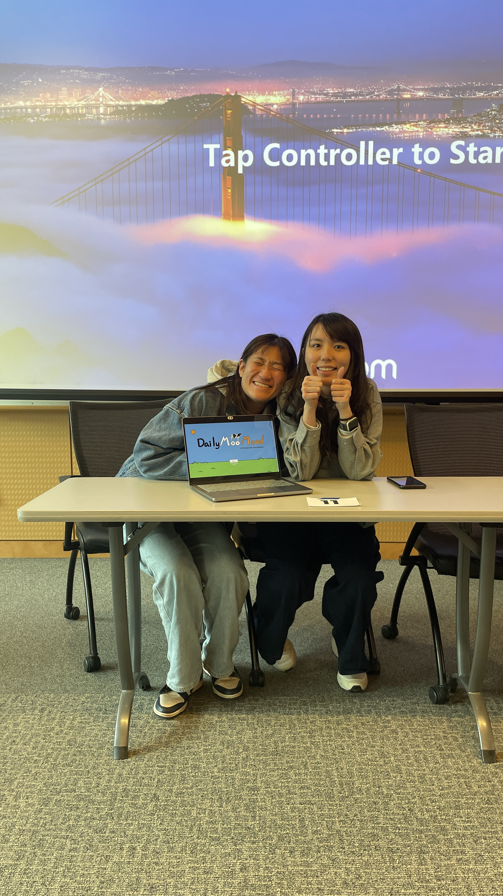

A Chill Space for Your Emotions
Developed during RoseHack 2025, Daily Moo Mood is a bovine-themed emotional wellness tracker designed to make self-reflection feel approachable instead of clinical. The project secured 2nd Place by transforming emotional maintenance from a daunting task into a low-friction, high-engagement daily habit.

Core interface snapshot: mood selection, contextual comment input, and calendar-based longitudinal tracking.
The cow is not just branding. It is a neutral, non-judgmental mascot that lowers the psychological barrier to reporting negative emotions.
In a wellness market that often feels medicalized, the bovine aesthetic creates psychological safety. Users can acknowledge “Awful” or “Bad” days without the weight of clinical stigma.
Reduce emotional check-ins to a simple, friendly ritual that users can actually sustain under stress.
Navigating a Fast-Paced World
Modern life demands high-velocity performance, yet offers few intuitive tools for emotional maintenance. Journaling can feel high-effort, while many wellness apps introduce too much complexity at the exact moment a user has the least emotional bandwidth.
- Journaling fatigue
- Overly clinical wellness flows
- Too much cognitive effort for daily use
- No quick path from emotion to action
- 5-stage visual Likert scale
- Low-pressure comment field
- Actionable “Clues to Fix” support
- Calendar view for pattern recognition
We identified a gap between high-effort journaling apps and passive health trackers. By using a 5-stage Likert scale represented by cow icons, the product minimizes the paradox of choice and makes emotional logging fast enough for stressed users to actually complete.
Intentionality and Positivity
The goal was to design more than a logger. The product needed to create a complete pathway from reflection to recovery.
Provide an immediate guided pause in the user's day so self-check-ins feel lightweight and emotionally safe.
Map long-term patterns so users can recognize emotional dips, anticipate them, and respond earlier.
Move from passive tracking to intervention through “Clues to Fix” and other actionable wellness prompts.
These goals shaped the hierarchy of the MooYourMood selector and the Clues to Fix feature. The product was designed so it does not simply record how users feel. It attempts to help them feel better next.
From Concept to Competition
The team worked through a disciplined User-Centered Design process inside a 24-hour hackathon sprint, balancing design quality, technical feasibility, and competition pressure.
The team replaced clinical mood labels with a more relatable spectrum: Awful, Bad, Meh, Good, and Rad.
Figma helped translate a soft, rounded, pastel-heavy interface into production-ready frontend components with high fidelity.
Sprint feedback showed users needed qualitative context, which led to the rapid addition of the Post comment feature.

Early branded entry point: approachable, playful, and low-pressure.
High-fidelity product state: the final mood selector and tracking view used in the hackathon prototype.

Additional project image from the Daily Moo Mood asset folder.
The move from raw concept to 2nd Place was driven by iteration. Each round of testing helped eliminate UI friction and technical rough edges, making the solution feel closer to a production-ready product than a one-off demo.
From Mood Logging to Actionable Care
Daily Moo Mood guides users through a complete emotional check-in loop: select a mood, add context, receive support, and track patterns over time.
5.1 The MooYourMood Interface
- 5-stage mood selector: vibrant visual states make emotional check-in instant and intuitive.
- Post comment: a low-pressure journaling field helps users attach context without committing to a full diary entry.
- Personalized session state: UI copy like “Welcome! Cathy Chen.” builds a sense of ownership and continuity.
5.2 “Clues to Fix”: Actionable Care

The “Clues to Fix” screen reframes support as a gentle, daily-serving ritual rather than a clinical intervention.
A prominent feature is the Deep Breathing Meditation, presented on a decorative floral plate.
The plate is a deliberate domestic metaphor. It frames mental health support as a daily serving of care, something familiar, routine, and accessible.
- Makes meditation feel less intimidating
- Turns support into a clear next step
- Connects reflection to recovery in the same flow
5.3 Longitudinal Emotional Tracking
The calendar view gives users a clean, high-level way to visualize emotional trends over time.
- Supports pattern recognition
- Helps identify environmental triggers
- Makes “Rad” streaks visible and motivating
Fast Collaboration, High Fidelity
Efficiency was critical. The project succeeded because design and engineering moved in sync, allowing the team to ship a polished experience within hours.
| Category | Tools Used |
|---|---|
| Frontend Framework | React, Alpine.js |
| Styling | Tailwind CSS |
| Backend / API | ASP.NET Core MVC |
| Database | SQLite |
| Languages | JavaScript, HTML5, CSS |
Tailwind CSS enabled the team to implement the app’s soft shadows and custom “chill” palette directly in markup, reducing styling overhead and helping the React frontend stay visually faithful to the Figma vision.
Beyond the Hackathon

RoseHack 2025 presentation moment: Daily Moo Mood was recognized with 2nd Place.
Winning 2nd Place at RoseHack 2025 validated the team’s belief that mental health tools can be both whimsical and effective.
For Cathy Chen, Jerry Chen, and Michelle Chen, the project became a compact but intense exercise in collaborative growth, rapid prototyping, and emotionally aware product strategy.
Daily Moo Mood demonstrates that when emotional tracking is designed with empathy and whimsy, it stops feeling like a chore and starts feeling like a sustainable habit.
Opportunities to Scale
Use NLP to extract deeper sentiment trends from user comments.
Explore correlations between mood data and factors like sleep or weather.
Tailor “Clues to Fix” suggestions based on each user’s historical success patterns.
Daily Moo Mood successfully created a chill space for emotions. By combining a playful bovine aesthetic, actionable wellness interventions, and a robust technical foundation, the product lowered the barrier to emotional resilience in a way that felt approachable, memorable, and award-worthy.